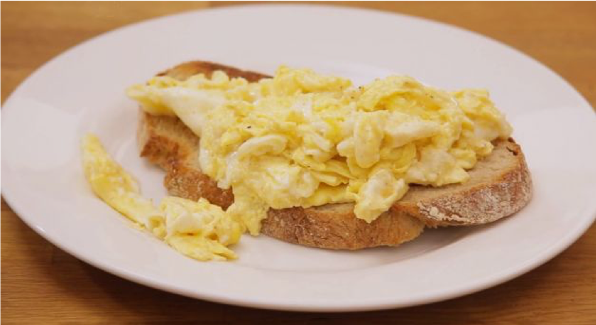

roerei
Iedereen moet op z'n minst een ei kunnen bakken. Hier leer je hoe.

Afbeelding 1: rroerei (bron afbeelding)
Ingrediënten
Methode
- Smelt de boter in een pan op een mild vuur.
- Mix de eieren en de room voorzichtig door elkaar.
- Wanneer de boter gesmolten is, voeg je het mengsel toe.
- Na ongeveer 20 seconden vouw je het ei dubbel.
- Zet het vuur uit en laat het ei langzaam verder bakken.
- Serveer op een voorverwarmd bord.